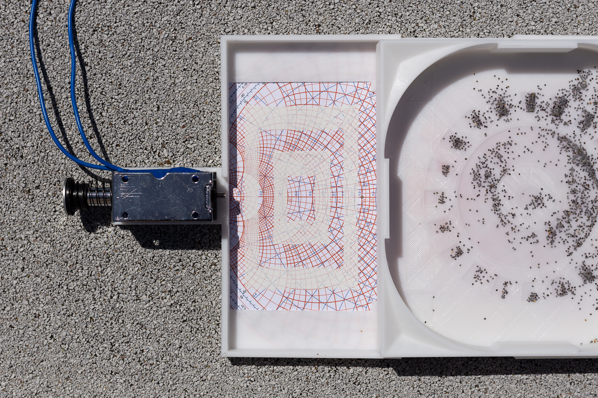
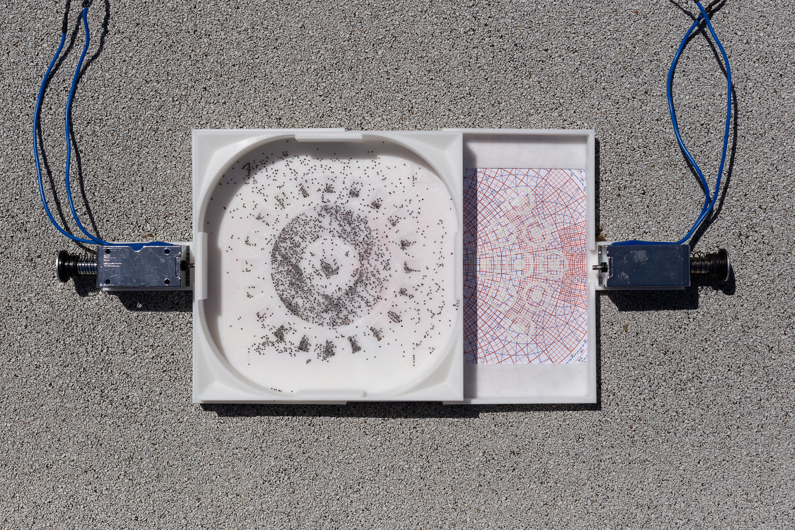

Augur
2022
Solenoids, poppy seeds, ink, paper, microcontroller, VOC sensor, plastic
14 x 6.5 x 0.5 in
Two solenoids controlled by a pollution sensor. The frequency of the pushes increases as the measured level of volatile
organic compounds and CO2 rises. With very high concentrations, the solenoids may begin to act erratically.


43% Random
2022
Number toy, DC motor, camera, microcontroller, plastic
2.5 x 4 x 3 in
Inkjet print
12 x 36 in
I found this toy in a second hand shop.
It has a clear plastic shell with small tiles numbered 1-50 on the inside.
There is a small "selector column" on the left which
can be used to separate a few of the tiles from the rest.
Who knows its original purpose, but to me it seems a sort of lottery number selector.
I was curious, how random are these numbers really?
I built a small testing rig, a DC motor with a hall sensor attached to detect each full rotation.
On each spin, a photograph was taken. Using computer vision techniques, the tiles were individually
extracted from the selector column of each image. They were then identified
using a neural network. In total, 42 kilobits of data was collected.
The bitstream was run through the NIST's Statistical Test Suite for Random and Pseudorandom Number Generators.
In the end, it was found to be random in 7 of the tests and non-random in 9.
What a shame. I really wanted it to be more random.


I Can't Stop
2022
Chair, stepper motor, brass cup, bearing, stick, plastic, microcontroller
16 x 16 x 35 in
A chair with one leg too short.